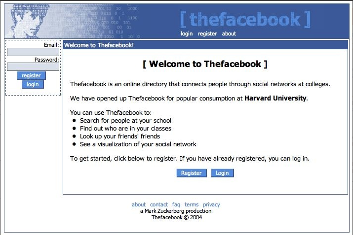

Ejemplos de Redes Sociales:

_Facebook

Facebook nació en la Universidad de Harvard, en Estados Unidos.
La red social fue lanzada el 4 de febrero de 2004 desde la modesta habitación de Mark Zuckberg.
La idea era simple pero revolucionaria: crear una nueva forma de compartir las vivencias del día a día.
Al principio, Facebook se utilizaba de forma interna entre los alumnos de la Universidad de Hardvard pero con el tiempo se abrió a todo aquel que tuviera una cuenta de correo electrónico. Así nació la leyenda de Facebook y así se inició una nueva era.
Facebook fue ganando más adeptos a medida que pasaba el tiempo. Sin embargo, su gran 'boom' no llegó hasta que fue traducido a diferentes lenguas. El español, el francés y el alemán fueron las primeras en incorporarse a la red social en torno al año 2007.
Actualmente, por medio de esta red, puedes encontrar personas conocidas, interactuar con ellas, participar en grupos que discuten temas de tu interés, compartir contenido (imágenes, texto, vídeo), enviar y recibir mensajes, hacer contactos, realizar búsquedas, hacer anuncios, etc. Por eso, estar en Facebook, entender su funcionamiento y los recursos que ofrece es un paso fundamental para quien quiere expandir su negocio o hacerse conocido, ampliar su alcance y sus estrategias de marketing digital.
Al principio, Facebook se utilizaba de forma interna entre los alumnos de la Universidad de Hardvard pero con el tiempo se abrió a todo aquel que tuviera una cuenta de correo electrónico. Así nació la leyenda de Facebook y así se inició una nueva era.
Facebook fue ganando más adeptos a medida que pasaba el tiempo. Sin embargo, su gran 'boom' no llegó hasta que fue traducido a diferentes lenguas. El español, el francés y el alemán fueron las primeras en incorporarse a la red social en torno al año 2007.
Actualmente, por medio de esta red, puedes encontrar personas conocidas, interactuar con ellas, participar en grupos que discuten temas de tu interés, compartir contenido (imágenes, texto, vídeo), enviar y recibir mensajes, hacer contactos, realizar búsquedas, hacer anuncios, etc. Por eso, estar en Facebook, entender su funcionamiento y los recursos que ofrece es un paso fundamental para quien quiere expandir su negocio o hacerse conocido, ampliar su alcance y sus estrategias de marketing digital.
Ventajas:
- Puedes estar conectado con tus amigos, familiares o compañeros de trabajo por medio del chat. Este permite un contacto directo en cualquier momento del día, aun cuando la otra persona no esta conectada, porque el mensaje lo envías por este mismo sistema y listo.
- Te permite conocer todo lo que pasa en tu municipio o el departamento, gracias a que puedes enlazar noticias en tu muro y compartirlas con los demás. Lo mejor de esto es que ellos pueden comentarla y generar un debate de la información.
- Puedes encontrar amigos de tu infancia, con los que jugabas cuando eras niño, ingresas al buscador en la parte superior, escribes su nombre y listo, identifícalo.
- Aprovecha Facebook para enviar fotos, videos o documentos que seguro te servirán en el colegio, universidad u oficina. Adjúntalo en tu mensaje y hazlo llegar a tus compañeros.
- Es una gran herramienta para vender productos o crear tu propia empresa, por ejemplo, vende zapatos, ropa, productos de decoración y permite que los clientes se pongan en contacto contigo.
- Crea encuestas del tema que quieras y conoce la opinión de tus amigos o clientes de tu empresa. Es una gran herramienta para medir lo que tus contactos quieren.
- Facebook te da la posibilidad de dar a conocer ideologías o hechos de la actualidad que pueden resultar interesantes. Escribe tus propios pensamientos que seguro tus contactos se interesarán.
Desventajas:
- Una desventaja que puede ser visible en Facebook es la privacidad, ya que antes de crear tu perfil debes tener muy en cuenta que quieres que tus contactos vean de ti para no tener inconvenientes en un futuro.
- Volverse adicto a Facebook puede ser perjudicial para tu vida. Aunque suene fuerte muchas personas se vuelven dependientes de esta herramienta y su única visión del mundo es lo que nos cuenta esta red social. A la hora de conectarte debes tener un control del tiempo que pasas en él.
- Hay que tener cuidado con los perfiles falsos, muchas personas los hacen con el objetivo de conocer información importante de ti para después robarte o extorsionarte. Puedes controlar esto no agregando personas desconocidas.
- Que te etiqueten en fotos las cuales tu no quieres mostrar es muy difícil de controlar, una forma de poder eliminarlas es denunciándolas pero puede demorarse. Esta es una desventaja muy molesta.
- Con esta información puedes tener más consciencia a la hora de ingresar a esta importante red social, presta atención a como usarla y seguro le sacarás un mayor provecho.